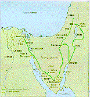
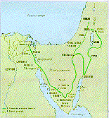
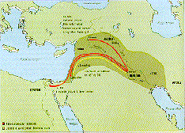
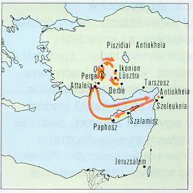
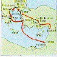
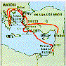
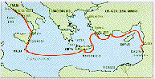

{kind=link}
 

A héberek megmenekültek Egyiptomból, de csak a tíz csapás után. A
csapások közvetlen kihívást jelentettek Egyiptom isteneinek és
megmutatták, hogy mennyire tehetetlenek a héberek Istenével szemben.
A rabszolgák nagy sietve felkészültek a menekülésre. Aranyat,
ezüstöt és ruhát kértek fogvatartóiktól, és amikor az egyiptomi
családok elsõszülött fiai elpusztultak az utolsó csapás során,
elindultak. Az elindulás elõtti éjszakán elfogyasztották elsõ húsvéti
ételüket, megünnepelve azt, hogy Isten megkímélte fiaikat, és
megszabadítja õket Egyiptomból. A zsidók minden évben megünneplik a
Húsvét ünnepét, megemlékezésül történelmük nagy eseményérõl.
A héberek valószínûleg Kr.e. 1280 körül hagyták el
Egyiptomot. Azzal tévesztették meg üldözõiket, hogy átkeltek a Jam
Szúfon, azaz "Sártengeren" (nem a Vörös-tengeren), a mocsarakon
keresztül, a Keserû-tavak és Zilu városa között. Kánaán, az "igéret
földje" felé vezetõ útjukon elérték a sivatagot. Szerverzetlenek
voltak, és alig volt felszerelésük, mégis hitték, hogy Isten
megszabadítja és kivezeti õket.
Ahogy Józsua szembekerült ezekkel a problémákkal, örülnie kellett a
Mózes mellett szerzett tapasztalatoknak. Mózes ugyanis rájött, hogy
vezérnek lenni nem könnyû feladat. Tudta, hogy milyen érzés egyedül
lenni, kiválasztottként, amikor éppen azok vádaskodnak ellene, akiken
segíteni akart. Istenbe vetett hite azonban erõt és bátorságot adott
neki, hogy véghezvigye feladatát. Józsua, amikor elkezdte munkáját,
tudatában volt Isten igéretének: "...veled leszek, ahogy Mózessal is
vele voltam, nem hagylak el, nem szolgáltatlak ki." (Józs.1,5)
Az asszír sémi nép, amely a mai Észak-Irak területén élt. Források
bizonyítják, hogy az asszírok már Kr.e. 2300 körül ott éltek és
nyelvük nagyon hasonlított a babilónira. Asszíria Kr.e. 1500-1100
között vált a Közel-Kelet vezetõ nemzetévé, és nyugaton egészen az
Euphratész folyóig terjeszkedett. Ezt visszaesés és káosz korszaka
követte, amikor az arámi nomádok megtámadták Asszíriát, és
visszaszorították hatalmát. Körülbelül Kr.e. 900-tól kezdõdõen azonban
katonakirályok sora indított támadást, hogy visszaszerezze az
elveszett területeket, és szigorú ellenõrzést vezessen be a
terjeszkedõ birodalmon belül.
A Biblia gyakran említi az asszírokat, akik Kr.e. 750-tõl állandó
fenyegetést jelentettek Izrael és Júda számára. Amikor legyõztek egy
népet, gyakran a lakosság nagy részét áttelepítették a birodalom más
területeire, hogy így csökkentsék az ellenállás veszélyét. Azután
idegeneket telepítettek a helyükre. A meghódított államok
megadóztatásának gyakorlata ismételten felkelésekhez vezetett.
 Kr.e. 598-ban lázadás tört ki Júdában és babilóni csapatok indultak a leverésére. Mire megérkeztek, Jójákim már halott volt, és fia, Jehójákin ült a trónon, aki háromhónapos ostrom után megadta magát. Jeruzsálemet elfoglalták, és Júda vezetõit Babilónba hurcolták. Jehójákin helyére nagybátját, Cidkiját ültették, Babilónból irányított bábkirálynak. Cidkija Jeremiás biztatása ellenére túl gyenge volt ahhoz, hogy jó uralkodó legyen, és amikor Kr.e. 589-ben kitört az újabb lázadás, a babilóniak elhatározták, hogy példát statuálnak Júdában. Kr.e.587-ben elfoglalták Jeruzsálemet, lerombolták a várost és a templomot, és még több embert hurcoltak fogságba Babilónba. Köztük volt Cidkija is, akit hûtlenségéért megtorlásul távoli urai megvakítottak.
Jeremiásnak megadták a lehetõséget, hogy csatlakozzék a
számûzöttekhez, de ö úgy érezte, ott a helye azzal a néhány
szegényemberrel, akit Júdában hagytak, hogy megmûveljék a
földet. Végül ezek az emberek arra kényszerítették, hogy velük menjen
Egyiptomba, ahol valószínûleg meghalt. Így a függöny végleg lehullott
Júda történelmére, és az elkövetkezõ ötven évben a nép tébbsége
számûzöttként Babilónban maradt. Ezután újra bekövetkezett az
elkerülhetetlen. Babilón erõs nemzete, amely meghódította az egész
Közel-Keletet, az északi Asszíriától a déli Egyiptomig, hatalmának
tetõpontjára érkezett, és hanyatlásnak indult. Ez az idõszak már a
perzsák kora volt, akik elhomályosították a korábbi birodalmak
dicsõséget, és velük együtt új remény és élet következett a zsidók és
Júda számára.
Nagy Sándor (Alexandrosz) csak tizenhárom éven át uralkodott Görögországban, de ez alatt a rövid idõszak alatt megváltoztatta a történelem menetét, és elterjesztette a görög eszméket és szokásokat az egész akkor ismert világban. Mindössze húszéves volt, amikor Észak-Görögország egyik körzetének, Makedóniának a királya lett, ugyanabban az évben, amikor III. Dareiosz a perzsa trónra került.
Hamar ellenõrzése alá vonta az egész országot. Azután, attól a céltól vezérelve, hogy a távoli országokban is elterjessze a görög nyelvet és kultúrát, 40000 fõs hadseregével átkelt Kisázsiába, onnan Egyiptomba vonult, s Alexandria néven új várost alapított. Valójában egy sor új várost alapított, közülük tizenhatnak adta az Alexandria nevet. Ezek a városok, szerte az új birodalomban, a görög hatás fontos központjai lettek.
A perzsa birodalom összeomlott elõtte. Nemegyszer a sajátjánál kétszer nagyobb hadseregeket gyõzött le. Egyiptomból keletre vonult, és elfoglalta Babilónt, Szúzát és Perszepoliszt. Amint azonban elérte az Indus folyót és a Himalája lábait, hadserege úgy döntött, hogy elég volt a harcból és haza akar térni. Hazafelé menet Babilónban Alexandrosz járvány áldozatául esett. Megérdemelten nyerte el a "Nagy" melléknevet.
Halála után birodalmán négy hadvezére osztozott. Egyikük, Szeleukosz, megszerezte Mezopotámiát, Kis-Ázsiát és Szíriát, és a szíriai Antiokheiában építette fel fõvárosát. Leszármazottait "szeleukidáknak" nevezték. Egy másik hadvezér, Ptolemaiosz, Egyiptom uralkodója lett, és megalapította a Ptolemaioszok dinasztiáját.
A római befolyás
Nyolcvan évi önkormányzat után a zsidók újra egy idegen hatalom -Róma- alattvalóivá váltak. Kr.e. 63-ban Pompeius római hadvezér, közel-keleti hódítása során, leigázva Szíriát római provinciává tette. Amikor két rivális zsidó trónkövetelõ hozzá fordult segítségért, elhatározta: vitájukat azzal zárja le, hogy Judeát megszerzi Rómának. Bevonult Jeruzsálembe, és gondoskodott arról, hogy ettõl fogva csak Róma által megerõsített uralkodók kormányozhassák a zsidókat.
Róma városa Itáliában, Palesztinától több száz mérföldre feküdt. Kr.e. 753-ban alapították. Kezdetben királyok uralkodtak felette, késõbb pedig a város gazdag családjaiból válsztott többszáz tagú szenátus. A szenátust a hivatalát egy éven át viselõ két konzul vezette. Kr.e. 250-re Róma már egész Itáliát befolyása alá hajtotta, és hódító hadjáratokra indult a Földközi-tenger körüli országok ellen. Rómának egyre nagyobb és nagyobb hadseregekre volt szüksége ahhoz, hogy új területeket szerezzen. Következésképp a római hadvezérek hatalma annyira megerõsödött, hogy hadseregük élén már Róma ellen vonulhattak és átvehették a uralmat.
Így a Kr.e. 1. században Rómában többször dúlt polgárháború, és nagy volt a politikai bizonytalanság. Julius Caesar, Pompeius és Marcus Antonius egymással vetélkedtek a hatalomért. Végül Julius Caesar fogadott fia, Octavianus legyõzte vetélytársait, és megszerezte Róma népének támogatását. Kr.e. 27-ben felvette az Augustus nevet, és kikiáltották Róma és a tartományok császárának.
Augustus jó uralkodó volt, akit békehozóként ünnepeltek. Átszervezte a provinciák irányítását. Megengedte a szenátusnak, hogy helytartókat nevezzen ki a régebbi, rendezetteb provinciák -például Szicília- élére, ahol már nem állomásozott hadsereg. Az újabb provinciákban azonban, ahol fennállt a lázadás vagy a határháború veszélye, a kormányzót az imperátor személyesen nevezte ki. Ezekben a provinciákban a római légiók képviselték a törvényt és tartották fenn a rendet.
Augustus Kr.e. 14-ben bekövetkezett haláláig uralkodott. Mostohafia, Tiberius követte, aki Kr.u. 37-ig gyakorolta a hatalmat. Jézus élete a két császár uralkodásának idejére esett. Lukács 2,1 Lukács 3,1
(Apostolok 8,1) Amikor Istvánt Jézussal foglalkozó prédikációi miatt halálra kövezték, ott volt egy Saul nevû férfi is, aki helyeselte a gyilkosságot. Röviddel ezután mégis õ lett a világ egyik leghíresebb keresztény igehirdetõje. Kr.u. 1-ben, zsidó szülõktõl született, Kilikia római provincia fõvárosában, Tarszoszban. Apja római polgár volt, és ez azt jelentette, hogy õ is római polgár lett. Amikor zsidó otthonától és barátaitól távol volt, római nevét -a Paulust, Pált- használta.
Az ifjú Sault Jeruzsálembe küldték iskolába, ahol a híres Gamaliél rabbinál tanult. A farizeusok pártjához csatlakozott, és buzgón betartotta a zsidó törvényt, minden részletében. Valószínûleg Jeruzsálemben tartózkodott Jézus küldetése és halála idején, de arról nincs tudósításunk, hogy találkozott volna Jézussal.
Saul, amikor meghallotta István beszédét, egy dologban biztos volt: gyûlölte Jézus követõit. Ezek arra biztatják a népet -gondolta-, hogy szegje meg Isten törvényeit. És hogyan lehetne messiás olyan valaki, akit mint valami bûnözõt megfeszítettek? Arra a következtetésre jutott, hogy a keresztényeket ki kell irtani, mielõtt még nagyobb befolyást szereznek. Engedélyt kért a fõpaptól, hadd kutassa fel és hozza vissza Jeruzsálembe a Damaszkuszba menekült keresztényeket, hogy a bíróság itélkezhessen felettük.
Már majdnem megtette a 225 kilométeres utat északra, Damszkuszba, amikor történt valami, ami megváltoztatta az életét. Egy látomást látott: Jézust látta, és hallotta, hogy õt szólítja. Egy szempillantás alatt rádöbbent, hogy amikor a keresztények ellen harcolt, valójában magával Istennel harcolt. Látta, hogy Jézus volt Isten messiása, és immár nem halott, hanem él. (Apostolok 9,1-9)
Amikor Damaszkuszba érkezett, nem fogta el a keresztényeket, hanem elkezdett maga is velük együtt istentiszteletekre járni. Mindenki megdöbbenésére nem azért ment a zsinagógákba, hogy elitélje a keresztényeket, hanem hogy újonnan ébredt hitérõl beszéljen ott is. Nem sokkal ezután történt, hogy néhány zsidó összesküdött ellene, hogy megöljék. Csak úgy tudott megmenekülni, hogy egy kosárban leeresztették Damaszkusz városfaláról. A keresztények üldözõje most maga lett üldözött. (Apostolok 9,19-25)
Három évvel azután, hogy keresztény lett, Saul találkozott
Jeruzsálemben Jézus néhány követõjével. Azok féltek tõle, azt
gondolták, hogy lehet, hogy csak színleli a kereszténységet, hogy
elfoghassa õket. Barnabás azonban megbarátkozott Saullal, és bemutatta
õt néhány apostolnak. Az apostolok megbizonyosodtak róla, hogy Saul
megváltozott, és meghívták, hogy ossza meg velük Jeruzsálemben az
igehirdetés munkáját. Ellenségei azonban megint az életére törtek, így
aztán ismét menkülnie kellett. Caesareába utazott, és onnan hajón haza
Tarszoszba. A következõ tíz évet valószínûleg otthon töltötte,
igehirdetéssel, és részt vállalva a családi sátorkészítõ
iparban. Saul, aki nemegy keresztény egyházat alapított, akárcsak
Ábrahám (a zsidó nép õsatyja), hamarosan megváltoztatta nevét. Élete
hátralévõ részében római nevén ismerték, Pálnak, amly név a nem-zsidó
hallgatóság körében otthonosabbnak hangozhatott. (Apostolok 9,26-30; Galatáknak 1,18-24)
Az elsõ utazás, Kr.u. 46-47
 A szíriai Antiokheia ötszázezer lakosával a római birodalom harmadik legnagyobb városa volt. Virágzó egyházát röviddel Jézus halála után azok a keresztányek alapították, akik az üldöztetések miatt menekültek el Jeruzsálembõl. Õk voltak az elsõk, akik nagy számban fogadtak be az egyházba nem zsidókat is. Amikor Barnabás Jeruzsálembõl megérkezett, hogy megvizsgálja, mi a helyzet, el volt ragadtatva attól, amit látott. Rögtön Tarszoszba ment, hogy magával hozza Sault is. Ezután egy éven át tanították az új keresztényeket Antiokheiában. (Apostolok 11,19-26)
Az egyház azonban szükségét érezte annak, hogy az apostolokat távolabbi területekre is elküldje az örömhírrel. Így õk ketten felkerekedtek, és segítõtársul magukkal vitték Barnabás unokaöccsét, János Márkot. Antiokheia kikötõjébõl, Szeleukeiából Ciprusba hajóztak. A szigetet Barnabás -mivel ott született- jól ismerte. (Apostolok 13,1-3)
Szalamiszban, ahol partot értek, a zsidó zsinagógában tanítottak. Azután a 160 kilométerre fekvõ Paphoszba utaztak, a sziget fõvárosába. Tanításuk olyan nagy hatással volt Sergius Paulusra, Ciprus helytartójára, hogy õ is megkeresztelkedett, bár egy varázsló, akinek korábban a befolyása alatt állt, ellenezte.
A hittérítõk Ciprustál északra vitorláztak, a mai Törökország területére. Bár kettejük közül Barnabás volt az idõsebb, nagyobb tehetsége révén hamarosan mégis Pál vált vezetõvé. Pergé mellett értek partot, és északra, Galatia provincia hegyei felé indultak. János Márk ekkor váratlanul elhatározta, hogy otthagyja õket, és visszatér Jeruzsálembe. Okai nem világosak. Talán megijedt a rájuk leselkedõ veszélyektõl, vagy egyszerûen csak honvágya támadt. A késõbbi években azonban értékes vezetõnek bizonyult. Pál, amikor élete végén börtönben ült, leveleiben úgy hivatkozott Márkra, mint barátjára és munkatársára. Valószínûleg ez a Márk volt Márk evangéliumának szerzõje. (Apostolok 13,13-14; Kolosszeiaiaknak 4,10; 2 Timotheosz 4,11; Filemon 1,24)
A piszidai Antiokheiában Pált meghívták prédikálni a zsinagógába, és sok istenfélõ áttért a keresztény hitre. Amikor azonban azt mondta a nem-zsidóknak, hogy nem kell betartaniuk a zsidó törvény minden elõírását ahhoz, hogy Isten elfogadja õket, a zsidók féltékenyek és mérgesek lettek. Így Pált és Barnabást kiûzték a városból. (Apostolok 13,50)
Ugyanez történt a következõ helyen, Ikónionban is, ezért Pál és Barnabás a 40 kilométerre fekvõ Lüsztrába menekült. (Apostolok 14,2) Amikor Pál meggyógyított egy bénát, a babonás helybeliek annyira elképedtek, hogy azt gondolták, Pál és Barnabás nem más, mint Hermész és Zeusz görög istenek emberi formában. Sok fáradságba került, míg megmagyarázták nekik, hogy õk ama nagy Isten követei, aki a földet teremtette. (Apostolok 14,12)
Ekkor megjelent néhány antiokheiai és ikónioni zsidó, és folytatták
a saját városukban elkezdett áskálódást ellenük. Pált csaknem halálra
kövezték, de elég gyorsan felépült ahhoz, hogy továbbmenjenek tanítani
egy másik helyre, Debrébe. Pál és Barnabás ezután visszatért
Lüsztrába, Ikónionba és Antiokheiába, hogy bátorítsa az új
keresztényeket, és kinevezze az egyházi vezetõket. Már két éve távol
voltak, és 2240 kilométert tettek meg szárazföldön és tengeren, mire
visszatértek a szíriai Antiokeiába. (Apostolok 14,19
A második utazás, Kr.u. 50-52
 A következõ út kétszer ilyen hosszú volt. Három évvel késõbb kezdõdött, amikor Pál rájött, hogy ideje visszamennie a Galatiában alapított egyházakhoz. felkerekedett Antiokheiából, és magával vitte barátját, Szilaszt is. Kétségkívül meglátogatták tarszoszt, Pál szülõvárosát, amikor útjuk Szírián és Kilikián át vezetett. Úgy találták, gogy Debrében, Lüsztrában és a piszidiai Antiokheiában az egyházak virágzanak. Lüsztrában találkoztak Pál egy fiatal görög barátjával, Timotheosszal, és magukkal vitték útjukra. (Apostolok 15,22-41; Apostolok 16,1)
Pál nyugatra, Asia római provincia fõvárosába, Epheszoszba akart menni. A körülmények azonban megakadályozták ebben, így Pál és Szilasz Asia észak-nyugati partja, Troász felé fordult. Ez a város a régi Trója helyén feküdt, amelynek harcosai Pál kora elõtt 1200 évvel, tíz éven át harcoltak a görögökkel.
Pál itt álmot látott, amelyben Isten azt mondta neki, hogy keljen át Európába, és ott is tanítson. Pál, Szilasz és a hozzájuk csatlakozó Lukács áthajózott a görögországi Neapoliszba. Az Észak-Görögországot átszelõ római út, a híres egnatiai út mentén végiglátogatták a görög városokat. (Apostolok 16,9-10)
Virágzó egyházakat alapítottak Philippiben és Thesszalonikében. A következõ évben a melegszívû Philippi-beli keresztények különösen megszerették Pált. De ellenzõik is akadtak. Rövid börtönpihenõjüknek egy földrengés vetett véget. A város babonás vezetõi szabadon bocsátották a keresztény foglyokat. A hittérítõk továbbmentek Bereiába, de Pálnak ismét ellenségei támadtak, ezúttal thesszalonikéi zsidók. Gyorsan menekülnie kellett, így dél felé, Athénnak vette útját, ahol megvárta míg társai csatlakoznak hozzá. (Apostolok 16,19-40; Apostolok 17,1-15)
Pál nem szándékozott Athénban idõzni és prédikálni, de a bálványok és szentélyek sokasága elszomorította. A piactéren beszélni kezdett a népnek Jézusról, és vitára hívta ki a filozófusokat. felkérték, hogy fejtse ki nézeteit az Areiopagosz dombján ülésezõ városi tanács elõtt. Egyesek zavarba jöttek, mások nevettek, amikor Jézus feltámadásáról beszélt. Voltak azonban, akik hittek neki és megkeresztelkedtek, mielõtt Pál továbbment volna Korinthoszba. (Apostolok 17,16-34)
Pál tizennyolc hónapig maradt Korinthoszban, Szilasz és Timótheosz is csatlakozott hozzá. Annak ellenére, hogy a város erkölcsi és társadalmi rendje nagyon romlott volt, az egyház gyorsan növekedett. Az emberek ingatagsága és erköcstelensége az egyházra is hatott. Késõbb, a korinthoszi egyháznak írott leveleiben Pál nyíltan beszélt a hívõk részeg magatartásáról az összejövetelek alatt, és a rossz kapcsolatról az egyház tagjai között. A város sok fontos polgára, köztük a gazdag háztulajdonos Titus Justus, akinek a házában az egyházközség találkozott, és Erastus a városi kincstárnok is keresztény lett. (Apostolok 18,1-17)
Pál és társai végül Kenkhré kikötõjébõl vitorláztak el. Útjuk
utolsó szakasza, Epheszoszon, Jeruzsálemen és Caesareán keresztül
Antiokheiába, mintegy 1600 kilométert tett ki. Az egyház immár nemcsak
Palesztinában, Kis-Ázsiában, hanem Görögország jelentõsebb városaiban
is szilárdan megvetette a lábát. (Apostolok 18,18-23)
A harmadik utazás, Kr.u. 52-56
 Pálnak végül sikerült teljesíteni régi vágyát, hogy meglátogassa Epheszoszt. A 250 ezer lekosú város Artemisz (római nevén Diana) templomáról volt híres. A helyi ezüstmûvesek vagyont gyûjtöttek istennõ-szobrocskáikkal, amelyeket az évente megrendezett nagy artemisz-ünnepre a városba érkezõ embereknek árultak. (Apostolok 19,1-20)
Pál több mint két évet töltött Epheszoszban. Egy ideig a zsinagógában tanított, amjd Türannosztól bérelt iskolát tanítás és viták céljára. Betegeket gyógyított. Néhányan, akik fekete mágiát ûztek, megkeresztelkedtek, beismerték gonosz üzelmeiket, ráolvasókönyveiket elhozták és nyilvánosan elégették. Az egyház olyan nagyra nõtt és úgy megerõsödött, hogy heves ellenszenvet váltott ki a városban.
Az ezüstmûvesek ipara lehanyatlott, mert az emberek már nem hittek Artemiszben. Egy Démétriosz nevû ezüstmûves gyûlést hívott össze, mert attól félt, hogyha Pálnak továbbra is megengedik a tanítást, fel kell hagyniuk az üzlettel. (Apostolok 19,23-41) A kézmûvesek haraggal telve kivonultak az utcára. Hamarosan nagy csõdület támadt, és magával hurcolva Pál két társát, Gaiust és Arisztarkhoszt, követte a kézmûveseket a színházba. A 25000 ember befogadására alkalmas színházban két órán át óriási volt a hangzavar, amíg a tömeg ezt kántálta: "Nagy az epheszosziak Artemisze!"
Végül a város jegyzõje csillapította le õket. Kijelentette, hogy a keresztények semmilyen bûnt nem követtek el, és ha valakinek panasza van Pál ellen, azt törvényes úton, a bíróságnál kell bejelentenie. Figyelmeztette õket, ha nem mennek gyorsan haza, számolniuk kell a veszéllyel, hogy római uraik megbüntetik õket lázadásért.
A nép megfogadta tanácsát és hazament. Az egyház békés növekedése értelmében azonban Pálnak al kellett hagynia a várost. Elindult újra Görögországba. Amikor szakadás következett be a korinthoszi egyházban, Pál egy levéllel elküldte Titust, hogy oldja meg a nehézségeket. Most azonban személyesen akart odamenni. Philippin, Thesszalonikén és Bereián keresztül ért oda, és három hónapot töltött Korinthoszban. Miután rendbehozta a korinthoszi egyház ügyeit, és meghallotta, hogy meggyilkolására újabb zsidó összeesküvést szõnek, Pál a szárazföldön keresztül visszatért Philippibe. (Apostolok 20,1-6)
Innen Troászba hajózott, ahol Görögország és Kis-Ázsia számos egyházából csatlakoztak hozzá barátai. A szegény jeruzsálemi keresztények számára pénzt gyûjtöttek egyházaiktól. Pál így akarta bizonyítani a palesztinai karesztényeknek, hogy a nem-zsidó keresztények törõdnek velük, és mindannyian Jézus Krisztus egy és ugyanazon egyházának tagjai.
Jeruzsálembõl Rómába, Kr.u. 60-61
 Pál alig néhány napja volt Jeruzsálemben, máris újra bajba került. Ellenséges zsidó zarándokok, valószínüleg epheszoszi látogatók, felismerték a templomban. Megvádolták, hogy egy nem-zsidót is behozott a templom belsõ udvarára, ahol pedig csak zsidók tartózkodhattak. Állításuk hamis volt, de gyorsan zavargást okozott. Pált csak az éppen idejében érkezõ római katonák mentették meg a haláltól azzal, hogy az Antónia vár biztonságos termeibe vitték. (Apostolok 21,27-39)
Pált saját biztonsága érdekében titokban átszállították a tartományi helytartó fõhadiszállására, Caesareába. Két éven át ült börtönben, amíg a helytartó, Felix töprengett, mit tegyen vele. Festus, a Felixet felváltó új helytartó elhatározta, hogy Jeruzsálemben állítja bíróság elé Pált, ahol zsidó vádlói ismertethetik az ügyet. Pál kevés esélyt látott arra, hogy a zsidó hatóságok elõtt kivívja igazát, ezért, élve római prolgárságával, fellebbezett, hogy Rómában, a császár elõtt vizsgálják ki az ügyét. (Apostolok 23,16-24,27; Apostolok 25,6-12)
Pált egy római centurio, Julius õrizetére bízták, aki jól bánt vele, és megengedte, hogy barátai, Lukács és Arisztarkhosz is vele utazzanak. A római tengeri út mejdnem szerencsétlenséggel végzõdött, a hajó ugyanis a vad szelek szeszélyének kitéve két hét után zátonyra futott Málta szigetén. Hogy könnyebbé tegyék a hajót, a búzarakományt a tengerbe szórták, a 276 utasnak és a személyzetnek pedig partra kellett úsznia. (Apostolok 27,1-44)
A háromhónapos máltai tartózkodás alatt Pál folytatta a tanítást Krisztusról, majd egy másik gabonaszállító hajóval az itáliai Puteoli kikötõjébe érkeztek. Pálnak megengedték, hogy egy hetet ott töltsön a keresztényekkel. A Rómáig hátralévõ 240 kilométert a híres úton, a Via Appián tették meg. (Apostolok 28,1-15)
Pál régóta dédelgetett vágya volt, hogy eljusson Rómába. Most
azonban tárgyalásra váró fegyencként érkezett meg. Egy katona õrizte,
de megengedték neki, hogy saját szálláson lakjon. Onnan leveleket
írhatott egyházainak, vendégeket fogadhatott, és taníthatott
mindenkit, aki eljött, hogy meghallgassa. Két évig lakott itt, és itt
ér véget Lukács elbeszélése. Nem tudjuk mi történt
ezután. Valószínûleg kihallgatták Neró császár elõtt, és ártatlannak
nyilvánították. Ezután még további két évet tölthetett utazással,
tanítással és az egyházak bátorításával, mielõtt Kr.u. 64-ben, amikor
a társadalmi elégedetlenségek idején a keresztényeket zaklatták és
üldözték, Rómában mártírhalált halt hitéért.
Izajás-tekercs. Részlet a Quaránban talált Izajás-tekercsbõl. Kr.e. 2. század.
Bodmer papirusz 200 körül. Részlet János evangéliumának elsõ fejezetébõl
Sinai kódex Kr.u. 350 körül másolták Palesztinában. A teljes görög nyelvû Bibliát tartalmazza.
{kind=link}
{kind=link}
{kind=link}
{kind=link}
{kind=link}
{kind=link}
{kind=link}
{kind=link}
{kind=link}
{kind=link}
{kind=link}
{kind=link}
{kind=link}